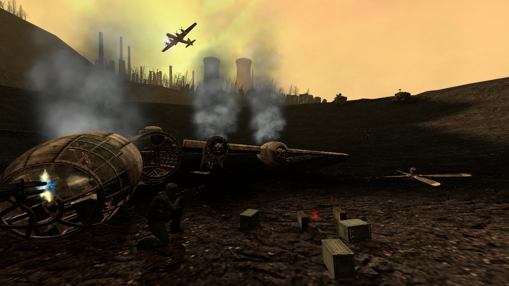

An All-Encompassing Military Vehicular Mod
Neurotec is a modification for Garry's Mod, a Sandbox-Physics game available on the Steam Store.
Currently, it reigns as supreme for being one of the most complete military mods, with a mature codebase and extensive and meticulous work throughout the project.
Unlike most CoderHire.com shiznit, this mod is absolutely free, and always wil be (but we'd love to take your moeny for some beer -- click Here to give a little something).
And just in case you wanted to download it, please Click Here to be taken to the download page.